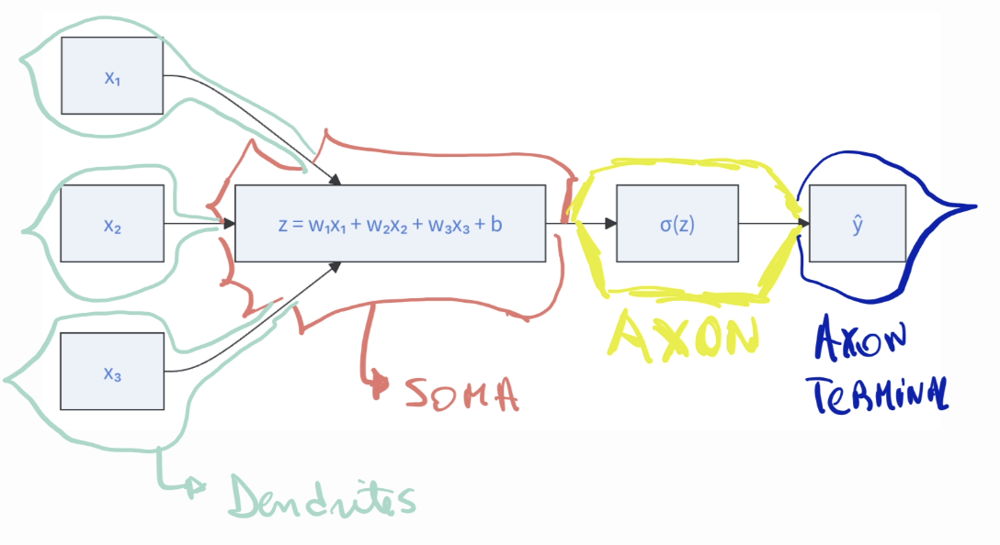
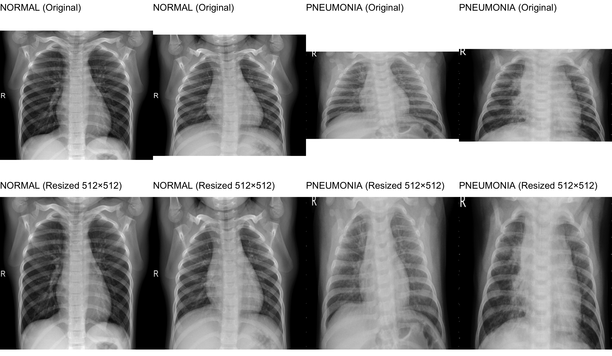

required <- c("reticulate","ggplot2","dplyr","magick")
installed <- rownames(installed.packages())
to_install <- setdiff(required, installed)
if (length(to_install) > 0) install.packages(to_install)4 Neural networks and deep learning
4.1 Setting up R
4.2 Neuromorphism
The inspiration for artificial neural networks comes from attempts to capture, in a very simplified mathematical form, how biological neurons compute.
This idea is known as neuromorphism (neuromorphic computing):
representing computation using abstractions loosely inspired by the brain, where “neurons” receive signals, combine them, and produce outputs,
and “synapses” determine how strongly inputs influence the neuron.
The goal was never to perfectly copy biology, but to learn from its ability to detect patterns, integrate evidence, and generalize. The reasons are that in fact biological systems are extremely complex to be perfectly copied.
4.3 What is inside our brain!
Neurons are specialized cells designed to receive, integrate, and transmit information. Neurons were first described by Santiago Jamon y Cajal, the father of neurology.
Although there are many neuronal subtypes, a “canonical” neuron has the manjor structural components show in Figure 4.1.

1. Dendrites (the input tree).
Dendrites are branched projections responsible for receiving incoming signals. Neurons typically receive thousands of excitatory and inhibitory synaptic inputs across their dendrites and soma.
These inputs arrive as postsynaptic potentials:
EPSPs (excitatory postsynaptic potentials), which depolarize the membrane
IPSPs (inhibitory postsynaptic potentials), which hyperpolarize the membrane
The spatial and temporal arrangement of these inputs contributes to how the neuron integrates information.
2. Synapses (weighted connections)
Each point of contact between neurons is a synapse, usually located on the dendritic tree. Synapses differ in their strength, some exert strong influence, others weak, and these strengths are not fixed.
This plasticity is the biological basis for learning and memory.
- Soma (Cell Body), the integrator
The soma receives and integrates all incoming EPSPs and IPSPs. This process is essentially a biophysical weighted sum of excitatory and inhibitory inputs, influenced by electrical properties of the membrane and dendritic morphology.
If the integrated membrane potential reaches a critical threshold, the neuron fires.
4. Axon Initial Segment, the decision point
At the base of the axon lies the Axon Initial Segment (AIS), where voltage-gated sodium channels are densely clustered. This is the site where the neuron decides whether to generate an action potential. If the integrated signal surpasses the threshold (typically around -55 mV ), a rapid depolarization occurs the spike.
5. Axon, the output cable
Once initiated, the action potential propagates along the axon, often insulated by myelin, which speeds conduction. When it reaches the axon terminals, it triggers release of neurotransmitters into the synaptic cleft, thereby influencing other neurons.
In summary, a biological neuron performs three essential computational steps:
1. Receives signals from thousands of synapses (inputs)
2. Weights and integrates them electrically in the soma
3. Triggers an action potential if the integrated input crosses a threshold
4. Propagates that output to other neurons
This biological computation is analog, non-linear, and highly dynamic due to plasticity.
4.4 The artificial neuron (Perceptron)
The artificial neuron, often called a perceptron, is a mathematical abstraction inspired by the computational behavior of biological neurons. While biological neurons operate through complex electrophysiological processes, the perceptron captures their essential functional properties using a simplified, interpretable formalism. This abstraction forms the foundational building block of modern neural networks.
4.5 Inputs and Weights
A perceptron receives a set of numerical inputs
\[ x_1, x_2, \ldots, x_p, \]
analogous to the synaptic signals arriving at a biological neuron’s dendrites.
Each input is associated with a weight:
\[ w_1, w_2, \ldots, w_p . \]
These weights represent the relative importance or influence of each input on the neuron’s final response. Conceptually, they play the role of synaptic strengtris-stronger weights exert greater impact, while
4.6 Weighted Sum (Aggregation)
The perceptron aggregates the incoming signals by computing a weighted linear combination:
\[ z=w_1 x_1+w_2 x_2+\cdots+w_p x_p+b=\mathbf{w}^{\top} \mathbf{x}+b . \]
The term \(b\) is the bias, which shifts the decision boundary and functions similarly to the membrane resting potential in biological neurons. This operation mirrors the integration of excitatory and inhibitory postsynaptic potentials that occurs within the soma of a biological neuron.
4.7 Nonlinear Activation Function
Once the weighted sum is computed, the perceptron applies an activation function, denoted \(\sigma(z)\), to determine its output.
This step introduces nonlinearity, allowing neural networks to model any continuous function on compact domains when sufficiently deep, as guaranteed by the Universal Approximation Theorem.
Common activation functions include:
- Step function (original perceptron):
\[ \sigma(z)= \begin{cases}1, & z \geq 0 \\ 0, & z<0\end{cases} \]
- Logistic (sigmoid) function:
\[ \sigma(z)=\frac{1}{1+e^{-z}} \]
- ReLU (Rectified Linear Unit):
\[ \sigma(z)=\max (0, z) \]
In biological terms, this activation function plays a role analogous to the axon initial segment, which determines whether the integrated membrane potential is sufficient to trigger an action potential.
4.8 Output
The final output of the perceptron is:
\[ \hat{y}=\sigma\left(\mathbf{w}^{\top} \mathbf{x}+b\right), \]
a scalar value that reflects the neuron’s “decision” based on the inputs. With a sigmoid output, for example, \(\hat{y}\) represents the probability of a particular class, making the perceptron suitable for binary classification problems.
4.9 Learning the Parameters
The perceptron is not static: it learns its weights and bias from data. Learning occurs by adjusting \(\mathbf{w}\) and \(b\) to reduce prediction error, typically through optimization algorithms such as gradient descent.
This process is the computational analogue of synaptic plasticity in biological neurons. For a training example with true label \(y\) and predicted output \(\hat{y}\), the weights are updated to reduce the difference between \(y\) and \(\hat{y}\) :
\[ w_j \leftarrow w_j-\eta \frac{\partial \mathcal{L}}{\partial w_j}, \]
4.10 Geometric Interpretation
Geometrically, the perceptron learns a linear decision boundary. For a binary classification task with output \(\hat{y} \in\{0,1\}\), the equation
\[ \mathbf{w}^{\top} \mathbf{x}+b=0 \]
represents a hyperplane that separates the two classes in input space. The perceptron adjusts its parameters during training until this hyperplane best divides the data.
4.11 Visualisation of a perceptron
The following diagram shows an illustration of a perceptron.
flowchart LR
x1["x₁"] --> SUM
x2["x₂"] --> SUM
x3["x₃"] --> SUM
SUM["z = w₁x₁ + w₂x₂ + w₃x₃ + b"] --> ACT["σ(z)"]
ACT --> y["ŷ"]
Which approximates a human neuron like shown in Figure 4.2.

4.12 The Perceptron as the Building Block of Neural Networks
Although a single perceptron can only model linear relationships, multiple perceptrons combined in layers can approximate highly complex functions.
Thus, the perceptron serves as the elemental computational unit for:
Multilayer Perceptrons (MLPs) such as the ones used for handwritten digit classification
Convolutional Neural Networks (CNNs), used in Chest X-ray classification
Recurrent Neural Networks (RNNs), used in Speech recognition
Transformers and deep architectures as the ones used in GPT models.
Every deep learning model ultimately relies on combinations of these simple units performing weighted
4.13 From a Single Perceptron to a Full Neural Network (The Layered Architecture)
The perceptron represents the simplest computational unit of artificial neural networks: it receives multiple inputs, applies a weighted sum, adds a bias, and transforms the result through a nonlinear activation function. Although this single unit is mathematically elegant, its expressive power is limited. A lone perceptron can only model linear decision boundaries; no matter how cleverly it is trained, it cannot capture patterns that require curved surfaces, interacting features, hierarchical structure, or multistage reasoning. To overcome these limitations, neural networks combine many perceptrons into a layered architecture.
A neural network is constructed by arranging perceptrons into layers, where the output of one layer becomes the input to the next. The first layer operates directly on the raw features and is conventionally called the input layer, although it performs no computation itself. The next layer, composed of multiple perceptrons, is known as a hidden layer. Each perceptron in this layer computes its own nonlinear transformation of the input, producing intermediate representations of the data. The network may contain several such hidden layers, each learning increasingly abstract and complex features. The final layer produces the network’s output, such as a class probability or a continuous prediction. See the next Figure.
flowchart LR
%% ==== INPUT LAYER ====
subgraph L1["Layer L₁ (Input Layer)"]
x1(("x₁"))
x2(("x₂"))
x3(("x₃"))
b1(("+1"))
end
%% ==== HIDDEN LAYER 1 ====
subgraph L2["Layer L₂"]
h11(("h₁¹"))
h12(("h₂¹"))
h13(("h₃¹"))
b2(("+1"))
end
%% ==== HIDDEN LAYER 2 ====
subgraph L3["Layer L₃"]
h21(("h₁²"))
h22(("h₂²"))
b3(("+1"))
end
%% ==== OUTPUT LAYER ====
subgraph L4["Layer L₄ (Output Layer)"]
y1(("ŷ₁"))
y2(("ŷ₂"))
end
%% Connections: L1 → L2
x1 --> h11
x1 --> h12
x1 --> h13
x2 --> h11
x2 --> h12
x2 --> h13
x3 --> h11
x3 --> h12
x3 --> h13
b1 --> h11
b1 --> h12
b1 --> h13
%% Connections: L2 → L3
h11 --> h21
h11 --> h22
h12 --> h21
h12 --> h22
h13 --> h21
h13 --> h22
b2 --> h21
b2 --> h22
%% Connections: L3 → L4
h21 --> y1
h21 --> y2
h22 --> y1
h22 --> y2
b3 --> y1
b3 --> y2
%% ==== Remove background from subgraphs ====
style L1 fill:#ffffff00,stroke:#00000000
style L2 fill:#ffffff00,stroke:#00000000
style L3 fill:#ffffff00,stroke:#00000000
style L4 fill:#ffffff00,stroke:#00000000
%% ==== Style nodes (white background, circular outlines) ====
classDef neuron fill:#ffffff,stroke:#333,stroke-width:1px,color:#000;
class x1,x2,x3,b1,h11,h12,h13,b2,h21,h22,b3,y1,y2 neuron;
This layered composition is essential for the power of neural networks. A single nonlinear transformation is insufficient to approximate rich patterns, but the composition of many nonlinear transformations can represent functions of extraordinary complexity. In the early layers, the network tends to learn simple or local dependencies among the inputs. As information flows forward through successive layers, these low-level computations are combined into higher-level abstractions. This hierarchical arrangement mirrors the structure of many natural phenomena and is one reason why deep learning performs so effectively in fields such as imaging, signal processing, and biomedical prediction.
Mathematically, each layer applies an affine transformation followed by a nonlinear activation. If the input vector is denoted by xxx, the first hidden layer computes an intermediate vector
\[h(1)=σ(W(1)x+b(1))h^{(1)} = \sigma(W^{(1)}x + b^{(1)})h(1)=σ(W(1)x+b(1))\]. A second layer takes these intermediate values and produces
\[h(2)=σ(W(2)h(1)+b(2))h^{(2)} = \sigma(W^{(2)} h^{(1)} + b^{(2)})h(2)=σ(W(2)h(1)+b(2))\]
This process continues until the output layer generates the final prediction. Without the nonlinear activation \(σ(⋅)\sigma(\cdot)σ(⋅)\), the entire network would collapse into a single linear transformation, no matter how many layers were added. Nonlinearity therefore plays a structural role in allowing the network to represent functions that curve, twist, or vary in ways that linear models never could.
The significance of layered architectures is further supported by the Universal Approximation Theorem, which shows that even a network with only one hidden layer can approximate any continuous function on a compact domain, provided it has a sufficient number of hidden units and an appropriate nonlinear activation. In practice, however, deep networks with multiple layers tend to learn more efficiently, generalize better, and capture hierarchical relationships in a way that shallow networks cannot. Additional depth allows the network to distribute complexity across many layers, enabling compact representations and facilitating learning from high-dimensional data.
The transition from a single perceptron to a full neural network is therefore a transition from a simple linear classifier to a flexible, hierarchical system capable of modeling intricate structures in data. This layered design underlies all modern deep learning methods, including multilayer perceptrons for tabular radiomics data, convolutional networks for medical imaging, recurrent architectures for temporal sequences, and transformer-based models for multimodal biomedical analysis. Regardless of the sophistication of the final architecture, the fundamental building block remains the perceptron, replicated and arranged into layers that collectively enable powerful function approximation.
flowchart LR A["Raw Pixels<br>(Chest X-ray)"] --> B["Feature Extraction<br>(edges, textures)"] B --> C["High-level Patterns<br>(lobar opacity, asymmetry)"] C --> D["Diagnosis Probability<br>(e.g., Pneumonia)"]
4.14 Deep learning
Deep networks extend the idea of a simple artificial neuron by stacking many such units across multiple layers, allowing the model to construct representations that become increasingly abstract as information flows forward. In shallow architectures, the network can only capture limited interactions, but depth introduces the ability to disentangle structure, recognize hierarchical relationships, and model patterns that vary at different spatial or temporal scales. This is why modern deep learning is often associated with “representation learning”: instead of hand-crafting features, the network discovers them through layer-by-layer transformations.
Within this broad family, several architectural classes have emerged, each tailored to a particular kind of structure in the data. Multilayer Perceptrons are the simplest expression of depth and are effective for tabular biomedical data, where each patient is represented by independent covariates. Convolutional Neural Networks introduce spatial invariance and local receptive fields, making them naturally suited for imaging, where patterns such as edges, textures, or radiological opacities repeat across space. Recurrent architectures, and later Transformers, were originally designed to handle temporal dynamics and long-range dependencies, but they have since expanded far beyond sequence data and now play central roles in multimodal clinical modeling.
What unifies all these architectures is the idea that depth allows the model to progressively refine its internal view of the data,from raw measurements to meaningful abstractions,and ultimately to a prediction. In the context of medical imaging, this capacity is especially important. Radiological patterns rarely exist in isolation; instead, they emerge from subtle combinations of shape, density, context, and anatomical variation. A deep network can first detect local primitives, such as edges or small opacity clusters, then aggregate them into regional descriptors like lobar consolidation or architectural distortion, and finally integrate these into global assessments that approximate expert diagnostic reasoning. This capacity to learn multi-scale, hierarchical structure is precisely what distinguishes deep learning from traditional machine-learning approaches that rely on predefined features.
As a result, deep architectures have become central to a wide range of imaging applications: classification of chest X-rays and CT scans, segmentation of tumors or anatomical structures, detection of subtle pathologies that may escape hand-engineered filters, and even synthesis or enhancement of images under limited acquisition conditions. Their strength lies not only in predictive performance, but also in their flexibility: the same underlying principles can be adapted to different modalities, resolutions, and clinical objectives. That is why deep learning has become the dominant paradigm in modern medical imaging,because it aligns naturally with how visual information is structured and how diagnostic interpretation unfolds.
This broader perspective sets the stage for the toy dataset we analyze next. By working with a simplified, computationally manageable subset of chest radiographs, we can see how even a small CNN begins to enact this hierarchical processing, transforming raw pixel values into the kinds of radiological abstractions that drive clinical decisions.
4.15 From Tables to Tensors
Before diving into images, it is worth pausing to understand what a tensor actually is, especially from the perspective of someone used to working with data frames and matrices in R. Deep learning frameworks operate almost exclusively on tensors, but this terminology can feel foreign when you first encounter it. The underlying idea, however, is not new: tensors simply extend the familiar notion of tables of numbers into additional dimensions. The jump from a data frame to a tensor is more of a gentle generalization than a conceptual leap.
Most students are already comfortable thinking about vectors and matrices. A vector is just an ordered list of numbers—R calls it a numeric vector—and a matrix is a rectangular table with rows and columns. Both of these objects are examples of tensors: a vector is a tensor of rank 1 and a matrix is a tensor of rank 2. Once this connection is made, the rest follows naturally. A tensor is simply an array that can have any number of dimensions. If you add one more dimension to a matrix, you get a rank-3 tensor; one more after that yields rank-4, and so on. Every time you add another axis, you gain the ability to represent structure that cannot be captured in a flat table—for example, stacks of images, sequences of individual patient records, or volumetric scans such as MRI or CT.
You can explore this directly in R. A vector behaves exactly like a one-dimensional tensor:
# Vectors: rank 1
v <- c(1, 2, 3)
v[1] 1 2 3length(v)[1] 3Likewise, a matrix is nothing more than a two-dimensional tensor:
# Matrices: rank 2
M <- matrix(1:9, nrow = 3, ncol = 3)
M [,1] [,2] [,3]
[1,] 1 4 7
[2,] 2 5 8
[3,] 3 6 9dim(M)[1] 3 3And by simply adding a third dimension, R constructs a true tensor:
# 3D arrays: rank 3 tensors
A <- array(1:24, dim = c(3, 4, 2))
A, , 1
[,1] [,2] [,3] [,4]
[1,] 1 4 7 10
[2,] 2 5 8 11
[3,] 3 6 9 12
, , 2
[,1] [,2] [,3] [,4]
[1,] 13 16 19 22
[2,] 14 17 20 23
[3,] 15 18 21 24dim(A)[1] 3 4 2This small example is enough to demystify the term. Tensors are not strange mathematical objects reserved for physicists or machine-learning specialists; they are the everyday data structures we already manipulate, extended into additional dimensions so that neural networks can operate on them efficiently.
A helpful way to build intuition for tensors is to start not from patient tables, but from the digital images themselves. An image, no matter the modality—X-ray, dermoscopy, retinal fundus, MRI slice—is fundamentally a collection of numbers arranged in a grid. In R, the simplest representation of a grayscale image is just a matrix, where each entry corresponds to a pixel intensity. When we load a picture into R and convert it to grayscale, we obtain a two-dimensional numerical array: height × width. This makes a grayscale image a rank-2 tensor, directly analogous to a matrix you are already familiar with.
For example, let’s simulate a tiny 5×4 “toy image” so the structure is easy to see:
# A tiny grayscale “image” (5 × 4 matrix)
img <- matrix(c(
10, 20, 30, 40,
15, 25, 35, 45,
18, 28, 38, 48,
22, 32, 42, 52,
25, 35, 45, 55
), nrow = 5, ncol = 4, byrow = TRUE)
img [,1] [,2] [,3] [,4]
[1,] 10 20 30 40
[2,] 15 25 35 45
[3,] 18 28 38 48
[4,] 22 32 42 52
[5,] 25 35 45 55dim(img) # height × width (rank 2)[1] 5 4This is exactly the same as the numerical grid underlying a real chest X-ray—just vastly smaller. If we were working with a standard medical image of size 512×512, the structure would be identical, simply larger:
(512, 512) → rank-2 tensor
When an image has color channels, such as RGB dermoscopy or retinal photos, we simply add one more dimension. R represents these as an array where the third axis stores the channels, producing a rank-3 tensor:
# Simulate a tiny RGB image (5 × 4 × 3)
rgb_img <- array(runif(5*4*3), dim = c(5, 4, 3))
dim(rgb_img) # height × width × channels (rank 3)[1] 5 4 3Once you have this perspective, the next step for deep learning becomes natural. A neural network never trains on a single image at a time. Instead, images are fed in batches, which introduces yet another dimension. Stacking several images together produces a rank-4 tensor:
# Create a batch of 3 small grayscale images (5 × 4 × 1)
batch <- array(rep(img, 3), dim = c(5, 4, 1, 3))
dim(batch) # height × width × channels × batch_size[1] 5 4 1 3This four-dimensional structure (batch, height, width, channels) is the exact format expected by TensorFlow and Keras when training a CNN.
The same logic extends effortlessly to 3D medical data. A CT or MRI scan is simply a stack of slices, so instead of a height × width matrix, you have depth × height × width. Add channels (such as multiple MRI sequences), and then add batching, and a full preprocessing pipeline produces tensors with shapes such as:
(depth, height, width, channels) (batch, depth, height, width, channels)
This is why the term “tensor” appears so often in deep learning. It provides a flexible way to represent data of any dimensionality—2D images, 3D volumes, time sequences, or entire batches of radiological studies. Neural networks take these tensors as input and transform them step by step into new tensors, each layer manipulating the shape to distill increasingly abstract information: edges become patterns, patterns become structures, structures become predictions.
Once you see tensors as nothing more than structured extensions of matrices, the workflow in image analysis becomes much easier to understand. A grayscale image is a matrix; a colored image is a matrix with channels; a CT scan is a stack of matrices; a batch of CT scans is a stack of stacks. Deep-learning frameworks operate on these tensors seamlessly, and with a bit of practice, the tensor shapes start feeling just as natural as ordinary tables in R.
4.16 Images as Numerical Data Across Medical Modalities
Although medical images appear to us as structured visual objects,chest radiographs, dermoscopy photos, histopathology slides, CT volumes, or MRI scans,deep learning systems treat all of them as nothing more than numerical arrays. Regardless of the imaging modality, every visual element ultimately resolves into grids of values representing either pixel intensities in two dimensions or voxel intensities in three dimensions. Neural networks do not “see” lungs, tumors, organs or textures; they process long, multidimensional tensors.
This unifying perspective is key because modern medical imaging spans a wide range of technologies. At the simplest end, we find classical two-dimensional modalities such as chest X-rays, ultrasound, dermoscopy, and retinal fundus photographs. These images are already familiar from everyday clinical practice: X-rays and ultrasound are usually stored as grayscale images with a single intensity channel, while dermoscopic and retinal images are acquired in colour using three channels. In all of these cases, once loaded into a deep learning library, an image becomes a rank-three tensor of shape (height, width, channels). A 512×512 chest radiograph is therefore nothing more than a 512×512×1 cube of numbers whose values range from dark to bright depending on the local tissue density.
Histopathology slides and fluorescence microscopy introduce additional complexity because they frequently contain multiple biochemical stains or multi-channel fluorescence signals. Even though the images can be extremely large,gigapixel whole-slide images are common,they still resolve into two-dimensional grids, often split into smaller patches for analysis. Each patch is represented numerically by arrays such as (224, 224, 3) for standard H&E staining or (224, 224, 5) for multi-spectral microscopy. Deep learning models can thus treat microscopy and pathology in the same numerical framework as chest X-rays, differing only in the number of channels.
More advanced imaging modalities bring depth into the picture. CT, MRI, and PET scanners generate full three-dimensional volumes composed of stacked slices. A CT scan might contain sixty or more axial slices, each 512×512 pixels, producing a volumetric array with shape (depth, height, width). Multi-contrast MRI extends this further by including several sequences,T1, T2, FLAIR, DWI,each acting as a distinct channel. These become rank-four tensors, such as (depth, height, width, channels), which are analysed using 3D convolutional networks or hybrid architectures.
Certain modalities even add a temporal dimension, such as ultrasound cine loops or cardiac MRI sequences. These datasets are represented as tensors like (time, height, width, channels), effectively creating four- or five-dimensional numerical structures. Deep learning architectures built for video analysis,ConvLSTMs, temporal CNNs, or vision transformers,operate naturally on these higher-rank tensors.
The unifying thread across all modalities is that pixel or voxel values serve as the raw features. A neural network does not need explicit annotations describing edges, shapes, textures, or pathological patterns because convolutional filters extract these representations automatically. The data themselves, expressed as tensors, contain everything the model needs to discover hierarchical structure: from local gradients and edges, to regional consolidation patterns, to whole-organ abnormalities.
This is one reason why the MedMNIST project Yang et al. (2023) is so pedagogically useful. MedMNIST provides a collection of small, preprocessed medical imaging datasets that represent many of these modalities,X-rays, retinal images, dermoscopy photographs, histopathology tiles, and even 3D volumetric scans,while standardizing them to uniform tensor shapes. ChestMNIST, for instance, offers downsampled chest radiographs as grayscale arrays. PathMNIST provides histopathology tiles as color images. OrganMNIST3D and NoduleMNIST3D present small volumetric CT-like cubes as rank-three tensors. Despite covering different anatomical regions, acquisition methods, and clinical purposes, the datasets are interchangeable at the tensor level, which makes them ideal for teaching.
Understanding that all medical images ultimately become tensors prepares us to move into model construction. When we load a chest X-ray for the pneumonia example in this chapter, we are simply converting pixel intensities into a tensor of shape (128, 128, 1). When we feed a batch of images to a convolutional neural network, we are stacking these tensors into a rank-four structure. As the image flows through the layers of the network, it is repeatedly transformed,convolved, pooled, flattened,into new tensors whose shapes reflect the abstraction level of the learned representations. This tensor-centric perspective allows us to navigate seamlessly from radiographs to MRI volumes and from single images to complex medical datasets.
4.17 Using Pretrained Architectures for Medical Imaging
In many practical situations, we do not need to design a convolutional neural network from scratch. The computer-vision community has spent more than a decade refining deep architectures capable of extracting hierarchical features from images—from edges and textures in early layers to objects and high-level semantics in deeper layers. These models, many of them trained on ImageNet, learn general-purpose visual representations that transfer surprisingly well to medical imaging tasks, even when the target domain differs substantially from the original training data.
When working with chest radiographs, histopathology tiles, dermoscopy photos or retinal fundus images, pretrained networks often dramatically improve performance relative to small, hand-crafted architectures—especially in small datasets where training a large network from scratch would lead to overfitting. A pretrained CNN already “knows” how to detect edges, textures, gradients, and shape patterns. Fine-tuning such a model therefore requires fewer labelled medical images, converges faster, and typically yields higher accuracy.
In this chapter, after introducing the basic building blocks of CNNs, we compare four models of increasing complexity:
TinyCNN – our handcrafted, minimal architecture operating directly on grey-scale tensors.
ResNet-18 – a classical backbone using residual skip connections He et al. (2016).
ResNet-50 – a deeper and more expressive residual network, also defined in He et al. (2016).
EfficientNet-B0 – a more modern architecture that systematically scales depth, width, and resolution Tan and Le (2019).
Although TinyCNN is intentionally simple, the remaining models reflect decades of architectural development and are widely used across radiology, dermatology, ophthalmology, and digital pathology. Their success in medical tasks demonstrates how transferable large-scale visual representations can be.
To illustrate this, we evaluate each architecture on PneumoniaMNIST, a lightweight version of the pediatric chest X-ray dataset originally curated by Paul Mooney Mooney (2018) and standardized in the MedMNIST benchmark suite Yang et al. (2021); Yang et al. (2023). For ResNet and EfficientNet, we convert the grayscale images to RGB to match the pretrained input format, replace the final classification layer with a single output neuron, and compute accuracy and confusion matrices.
4.18 Toy Data for the chapter
The first datasert we will use this chapter we will is a curated subset of the Chest X-Ray Pneumonia dataset, originally released on Kaggle by Mooney (2018). The full dataset contains more than 5,000 radiographs with resolutions up to 1024×1024 pixels, distributed across normal and pneumonia classes. While this dataset is ideal for clinical–motivated deep learning, its size makes it challenging for users running models on standard laptops.
To address this, we prepared a toy version of the dataset, containing a balanced and substantially smaller sample of images (250 per class). The toy dataset keeps two copies of each selected image:
Original image: stored exactly as released (high resolution, variable size).
Compressed image: resized to a fixed resolution (e.g., 512×512), suitable for CNN training on typical laptops.
4.18.1 Image compression
Raw medical images particularly chest X-rays, CT slices, and MRI scans are often large (1–5 MB per image). Processing them directly can make training:
slow, due to large tensor operations,
memory-intensive, particularly on laptops without GPUs,
computationally expensive, since convolution scales with image size.
A 1024×1024 radiograph contains four times more pixels than a 512×512 version and sixteen times more than 256×256. Convolutional filters must process each pixel, so reducing resolution leads to substantial gains in training speed with minimal loss of diagnostic signal for tasks like pneumonia detection. For these reasons, the toy dataset includes paired images: the untouched originals and the pre-processed, standardized 512×512 versions. Students can explore the visual differences and appreciate that, although details are reduced, the core diagnostic structures (e.g., opacities, texture patterns) remain visible.
The following code allow us to read the data and plot some images to have a glimpse of what the data look like
library(magick)
library(ggplot2)
library(gridExtra)
library(grid)
library(tools)
# ---------------------------------------------------------
# Paths
# ---------------------------------------------------------
toy_base <- "data/chest_toy_250"
orig_dir <- file.path(toy_base, "original")
resized_dir <- file.path(toy_base, "resized")
# ---------------------------------------------------------
# Helper: extract class from filename
# ORIGINAL files look like: NORMAL_xxx.jpeg or PNEUMONIA_xxx.jpeg
# ---------------------------------------------------------
get_class <- function(x) {
toupper(strsplit(basename(x), "_")[[1]][1])
}
# ---------------------------------------------------------
# List and classify ORIGINAL images
# ---------------------------------------------------------
orig_files <- list.files(
orig_dir, full.names = TRUE,
pattern = "\\.(jpg|jpeg|png)$"
)
orig_classes <- sapply(orig_files, get_class)
# ---------------------------------------------------------
# Sample exactly 2 NORMAL and 2 PNEUMONIA
# ---------------------------------------------------------
orig_norm <- orig_files[orig_classes == "NORMAL"]
orig_pneu <- orig_files[orig_classes == "PNEUMONIA"]
set.seed(123)
orig_selected <- c(sample(orig_norm, 2), sample(orig_pneu, 2))
# ---------------------------------------------------------
# Match each selected ORIGINAL to its resized version
# Resized names look like: NORMAL_xxx_resized.png
# ---------------------------------------------------------
res_selected <- sapply(orig_selected, function(f) {
stem <- file_path_sans_ext(basename(f))
file.path(resized_dir, paste0(stem, "_resized.png"))
})
# ---------------------------------------------------------
# Load images
# ---------------------------------------------------------
orig_imgs <- lapply(orig_selected, image_read)
res_imgs <- lapply(res_selected, image_read)
# Build titles based on class
titles_orig <- sapply(orig_selected, function(f) paste0(get_class(f), " (Original)"))
titles_res <- sapply(orig_selected, function(f) paste0(get_class(f), " (Resized 512×512)"))
# ---------------------------------------------------------
# Convert to ggplot grobs
# ---------------------------------------------------------
make_plot <- function(img, title) {
ggplot() +
annotation_custom(rasterGrob(img)) +
ggtitle(title) +
theme_void()
}
plot_list <- list()
# First row: originals
for (i in seq_along(orig_imgs)) {
plot_list[[length(plot_list)+1]] <- make_plot(orig_imgs[[i]], titles_orig[i])
}
# Second row: resized
for (i in seq_along(res_imgs)) {
plot_list[[length(plot_list)+1]] <- make_plot(res_imgs[[i]], titles_res[i])
}
# ---------------------------------------------------------
# Plot: 2 rows × 4 columns
# ---------------------------------------------------------
p=grid.arrange(grobs = plot_list, ncol = 4)
ggsave("figures/toy_chest_comparison.png",
plot = p,
width = 12, height = 7,
dpi = 300,
bg = "white")
The code shown above selects a balanced subset of chest radiographs and prepares two parallel versions of each image. The first retains the original resolution of the dataset, while the second produces a standardized 512×512 pixel version. This allows us to examine the effect of image compression while keeping the resized images computationally manageable for downstream modeling. The script identifies matching pairs of images for both NORMAL and PNEUMONIA categories loads them with the magick library, and arranges them in a grid where the original images appear in the first row and their compressed counterparts appear directly beneath them.
Because the resized images preserve lung structure and overall radiological patterns, we can directly assess the trade-off between image fidelity and computational efficiency. Even after downsampling, the essential visual features remain recognizable, which is a central motivation for preprocessing high-resolution medical images before training predictive models. We will no understand this with Figure 4.3.

4.18.2 What the figures show
When examining Figure 4.3, we can see that normal pediatric chest radiographs have relatively uniform, darker lung fields, reflecting the low density of air-filled alveoli. The pulmonary vessels appear as fine branching structures, the diaphragmatic borders remain sharp, and the cardiac silhouette stands out clearly against the surrounding aerated lung. There is a sense of symmetry and well-defined anatomical boundaries.
In contrast, the pneumonia images display areas of increased opacity regions that appear whiter or denser corresponding to alveoli filled with inflammatory material rather than air. We can see patchy or segmental consolidations that disrupt the uniform darkness of the lungs, obscure normal vascular markings, or blur the heart borders. These opacities may also distort the expected symmetry between the left and right lung fields.
When comparing the original and resized images, we can see that the downscaled versions still retain the broad radiographic patterns that distinguish normal lungs from those affected by pneumonia. The fine-grained textures are somewhat softened, but the structural changes associated with consolidation remain visible. This illustrates why compressed images often remain adequate for classification tasks: the key diagnostic features are large-scale density patterns, which are preserved even after substantial reduction in image resolution. The paired display therefore highlights both the radiological differences between normal and pneumonia cases and the practical effect of image compression within a machine-learning workflow.
4.19 Fitting a naive neural network for prediction of pneumonia
To demonstrate the mechanics of training a convolutional neural network (CNN), we now walk through a complete example using a toy subset of chest X-ray images. The objective is deliberately modest: the network is not intended to achieve clinical performance, but rather to illustrate the full computational workflow that takes us from pixel data to probability predictions.
At a high level, the modelling pipeline follows four steps: loading and labelling the images, converting each image into a numerical tensor, defining a minimal CNN architecture, and training the network using gradient-based optimisation. Even a very small model reveals the essential building blocks of deep learning for image analysis.
Data preparation All images in the pre-processed folder are listed and labelled according to their filenames, which contain either NORMAL or PNEUMONIA. The dataset is then shuffled and partitioned into training \((70 \%)\), validation \((15 \%)\), and test \((15 \%)\). Because neural networks operate on numerical arrays, each image is loaded from disk, converted to grayscale, resized to \(128 \times 128\) pixels, and normalised to the \([0,1]\) range. The resulting tensor has the shape
\[ (128,128,1), \]
corresponding to height, width, and channel count. These arrays form the inputs for Keras/TensorFlow.
Model architecture The CNN itself is intentionally small. It begins with an explicit input layer
\[ X \in \mathbb{R}^{128 \times 128 \times 1}, \]
followed by two convolution-ReLU-pooling blocks. Convolutional layers learn spatial filters that respond to edges, textures, and coarse structures in the X-ray images, while max-pooling progressively reduces spatial resolution:
\[ \text { image → conv } \text { → ReLU } \text { → pool. } \]
After two rounds of convolution and pooling, the resulting activation maps are flattened and passed into dense layers:
\[ \text { Flatten → Dense(32) } \rightarrow \text { Dense(1). } \]
The final layer uses a sigmoid activation, producing an estimated probability
\[ \hat{p}=P(\text { pneumonia } \mid X) . \]
Although compact, this network captures all core components of modern CNNs: convolution, nonlinearity, down-sampling, and fully connected classification.
Training the network
The model is trained using the Adam optimiser with a learning rate of \(5 \times 10^{-4}\). We use binary crossentropy as the loss function:
\[ \mathcal{L}=-[y \log (\hat{p})+(1-y) \log (1-\hat{p})] . \]
During training, the network repeatedly performs forward passes to compute predictions, evaluates the loss, and uses backpropagation to update its filter weights. Validation accuracy and loss are monitored after each epoch to gauge generalisation.
Even with this very small architecture and a tiny dataset, the training loop performs thousands of tensor operations. Students should be aware that deep learning workloads scale quickly and can become computationally heavy without GPU acceleration.
Model performance After ten epochs, the model reaches good performance on both the training and test sets:
- Training accuracy: 0.924
- Training loss: 0.219
- Test accuracy: 0.908
- Test loss: 0.226
The confusion matrix on the held-out test set is:
| truth predicted | 0 | 1 |
|---|---|---|
| 0 (NORMAL) | 59 | 10 |
| 1 (PNEUMONIA) | 3 | 69 |
The model detects pneumonia well (few false negatives), while still misclassifying a moderate number of NORMAL images as pneumonia (false positives). This behaviour is typical for small CNNs trained on imbalanced or limited datasets, and it highlights an essential lesson: even when accuracy seems high, practical clinical reliability requires much more data, better preprocessing, stronger architectures, and rigorous evaluation.
Saving the model
Once training is complete, the model and all diagnostics (training history, predictions, metrics) are saved to disk. Saving models is a crucial habit in any deep-learning workflow, as training may take considerable time and should not be repeated unnecessarily. Stored models can be reloaded instantly for future experiments, teaching demonstrations, or interpretability analyses.
library(reticulate)
use_condaenv("r-keras", required = TRUE)
library(tensorflow)
library(keras)
library(magick)
library(dplyr)
img_dir <- "data/chest_toy_250/resized"
files <- list.files(img_dir, full.names = TRUE, pattern = "png$")
get_label <- function(x) {
if (grepl("PNEUMONIA", basename(x), ignore.case = TRUE)) 1 else 0
}
df <- data.frame(
file = files,
label = sapply(files, get_label)
)
set.seed(123)
df <- df[sample(nrow(df)), ]
n <- nrow(df)
train_df <- df[1:floor(0.7*n), ]
val_df <- df[(floor(0.7*n)+1):floor(0.85*n), ]
test_df <- df[(floor(0.85*n)+1):n, ]
load_array <- function(path) {
img <- image_read(path)
img <- image_convert(img, colorspace = "gray")
img <- image_resize(img, "128x128!")
arr <- as.numeric(img[[1]]) / 255
array(arr, dim = c(128, 128, 1))
}
x_train <- array(0, dim = c(nrow(train_df), 128, 128, 1))
x_val <- array(0, dim = c(nrow(val_df), 128, 128, 1))
x_test <- array(0, dim = c(nrow(test_df), 128, 128, 1))
for (i in seq_len(nrow(train_df))) x_train[i,,,] <- load_array(train_df$file[i])
for (i in seq_len(nrow(val_df))) x_val[i,,,] <- load_array(val_df$file[i])
for (i in seq_len(nrow(test_df))) x_test[i,,,] <- load_array(test_df$file[i])
y_train <- train_df$label
y_val <- val_df$label
y_test <- test_df$label
build_model <- function() {
inputs <- layer_input(shape = c(128L,128L,1L))
x <- inputs %>%
layer_conv_2d(filters = 8, kernel_size = 3, activation = "relu", padding = "same") %>%
layer_max_pooling_2d(pool_size = 2) %>%
layer_conv_2d(filters = 16, kernel_size = 3, activation = "relu", padding = "same") %>%
layer_max_pooling_2d(pool_size = 2) %>%
layer_flatten() %>%
layer_dense(units = 32, activation = "relu") %>%
layer_dense(units = 1, activation = "sigmoid")
model <- keras_model(inputs = inputs, outputs = x)
model %>% compile(
optimizer = optimizer_adam(learning_rate = 0.0005),
loss = "binary_crossentropy",
metrics = c("accuracy")
)
model
}
model <- build_model()
history <- model %>%
fit(
x_train, y_train,
validation_data = list(x_val, y_val),
epochs = 10,
batch_size = 8
)
metrics_train <- model %>% evaluate(x_train, y_train)
print(metrics_train)
metrics_test <- model %>% evaluate(x_test, y_test)
print(metrics_test)
pred_test <- model %>% predict(x_test)
pred_class <- ifelse(pred_test > 0.5, 1, 0)
print(table(truth = y_test, predicted = pred_class))
saveRDS(history, "cnn_history.rds")
saveRDS(metrics_test, "cnn_metrics_test.rds")
saveRDS(pred_test, "cnn_predictions_test.rds")
saveRDS(metrics_train, "cnn_metrics_train.rds")
model$save("cnn_pneumonia.keras")4.19.1 By with a little from Python
Alongside the R-based workflow, it is useful to illustrate how the same modeling pipeline can be implemented in Python using PyTorch. The script below trains several neural-network architectures on the PneumoniaMNIST dataset and evaluates their performance under a unified interface. While the code is not executed inside the textbook, it provides a complete and reproducible reference for readers who want to explore the models in Python.
The workflow begins by loading the dataset through MedMNIST, a lightweight benchmark collection for medical image classification. Images are provided as 28×28 grayscale tensors with binary labels (normal vs pneumonia). Because different neural-network architectures expect different input shapes, the script includes dataset wrappers that optionally convert grayscale images to RGB and resize them when required (e.g., for ResNet-50 and EfficientNet-B0).
Model specification relies on PyTorch and torchvision. Four architectures are included:
TinyCNN – a simple two-layer convolutional network designed to illustrate baseline performance.
ResNet-18 – a residual architecture that uses skip connections to stabilise training in deeper models.
ResNet-50 – a larger residual network with bottleneck blocks and substantially more capacity.
EfficientNet-B0 – a modern architecture that applies compound scaling to depth, width, and resolution.
Each model is adapted to binary classification by replacing the final fully-connected layer with a single output neuron. All models are trained with binary cross-entropy (via BCEWithLogitsLoss) and optimised with Adam. The training loops share the same structure: enable training mode, iterate through mini-batches, compute forward and backward passes, and update the parameters. After training, model weights are saved to disk to ensure that the evaluation script can reload them later without retraining.
Evaluation uses a common helper function that computes predictions, applies a sigmoid threshold at 0.5, and returns both accuracy and a confusion matrix. These metrics allow a like-for-like comparison across architectures. A small utility function based on matplotlib and seaborn visualises the confusion matrices.
Structurally, the script demonstrates a full supervised-learning pipeline:
dataset loading and preprocessing
model definition and customisation
training using stochastic gradient descent methods
inference and metric computation
persistence of trained weights
visualisation of performance diagnostics
The Python implementation complements the R material by showing how deep-learning models are typically organised in PyTorch workflows, how pretrained architectures can be fine-tuned for medical imaging tasks, and how performance varies across models of different capacities.
4.19.2 A short note on PyTorch
Throughout the examples in this chapter we rely on PyTorch, one of the most widely used open-source frameworks for deep learning. PyTorch is built around a simple idea: treat tensors as first-class numerical objects and allow models to be expressed as ordinary Python code. This makes experimentation fast and transparent—layers, losses, and optimizers behave like regular Python objects that can be inspected, modified, or replaced.
PyTorch offers:
Dynamic computation graphs (“define-by-run”), which evaluate operations as they are executed. This style is particularly intuitive when building or debugging neural networks.
A rich library of modules for convolutional layers, normalization, pooling, activation functions, and loss functions. Most architectures used in modern computer vision can be reproduced with a handful of lines.
GPU acceleration through CUDA integration, allowing models to scale from small educational datasets (like PneumoniaMNIST) to clinical-grade imaging repositories.
TorchVision, a companion package providing pretrained models (ResNet, EfficientNet, DenseNet, ViT), image transformations, and standardized evaluation pipelines.
DataLoader abstractions, which handle batching, shuffling, and parallel data fetching. For image-based pipelines this is essential: models rarely process images one at a time, and appropriately designed loaders ensure smooth throughput.
In the comparison code above, PyTorch orchestrates every step: loading and batching images, defining lightweight (TinyCNN) and heavyweight (ResNet, EfficientNet) networks, applying loss functions, optimizing parameters, and finally evaluating predictive performance. Even when the architecture becomes complex, the overall workflow remains the same: tensors in, tensors out, gradients computed automatically, and model weights updated by optimizers.
import torch
import torch.nn as nn
import torch.optim as optim
from torchvision import transforms, models
from torch.utils.data import DataLoader, Dataset
from tqdm import tqdm
import medmnist
from medmnist import INFO
# ------------------------------------------------------------
# Load PneumoniaMNIST (binary labels)
# ------------------------------------------------------------
data_flag = "pneumoniamnist"
info = INFO[data_flag]
DataClass = getattr(medmnist, info['python_class'])
transform = transforms.Compose([
transforms.ToTensor()
])
train_ds = DataClass(split="train", download=True, transform=transform)
test_ds = DataClass(split="test", download=True, transform=transform)
# ------------------------------------------------------------
# Safe label extraction (no deprecation warnings)
# ------------------------------------------------------------
def extract_scalar(lbl):
# lbl may be array([0]) or array([1])
# This safely extracts the single value no matter the dtype
return float(lbl.squeeze().item())
train_x = torch.stack([img for img, lbl in train_ds])
train_y = torch.tensor([extract_scalar(lbl) for _, lbl in train_ds])
test_x = torch.stack([img for img, lbl in test_ds])
test_y = torch.tensor([extract_scalar(lbl) for _, lbl in test_ds])
class PneumoniaBinary(Dataset):
def __init__(self, X, y):
self.X = X
self.y = y
def __len__(self):
return len(self.X)
def __getitem__(self, idx):
return self.X[idx], self.y[idx]
train_loader = DataLoader(PneumoniaBinary(train_x, train_y), batch_size=64, shuffle=True)
test_loader = DataLoader(PneumoniaBinary(test_x, test_y), batch_size=64, shuffle=False)
import torch
import torch.nn as nn
import torch.optim as optim
from torchvision import transforms, models
from torch.utils.data import Dataset, DataLoader
from tqdm import tqdm
import medmnist
from medmnist import INFO
import numpy as np
import matplotlib.pyplot as plt
data_flag = "pneumoniamnist"
info = INFO[data_flag]
DataClass = getattr(medmnist, info['python_class'])
transform = transforms.Compose([
transforms.ToTensor()
])
train_ds = DataClass(split="train", download=True, transform=transform)
test_ds = DataClass(split="test", download=True, transform=transform)
# FIX LABELS: PneumoniaMNIST returns a dict-like label, we extract scalar
train_x = torch.stack([img for img, lbl in train_ds])
train_y = torch.tensor([int(lbl) for _, lbl in train_ds]).float()
test_x = torch.stack([img for img, lbl in test_ds])
test_y = torch.tensor([int(lbl) for _, lbl in test_ds]).float()
class PneumoniaBinary(Dataset):
def __init__(self, X, y):
self.X = X
self.y = y
def __len__(self):
return len(self.X)
def __getitem__(self, idx):
return self.X[idx], self.y[idx]
train_loader = DataLoader(PneumoniaBinary(train_x, train_y), batch_size=64, shuffle=True)
test_loader = DataLoader(PneumoniaBinary(test_x, test_y), batch_size=64, shuffle=False)
print("Train:", len(train_loader.dataset))
print("Test:", len(test_loader.dataset))
class TinyCNN(nn.Module):
def __init__(self):
super().__init__()
self.conv1 = nn.Conv2d(1, 16, 3, padding=1)
self.conv2 = nn.Conv2d(16, 32, 3, padding=1)
self.pool = nn.MaxPool2d(2, 2)
# 28→14→7 (MedMNIST images are 28x28)
self.fc1 = nn.Linear(32 * 7 * 7, 64)
self.fc2 = nn.Linear(64, 1)
def forward(self, x):
x = self.pool(torch.relu(self.conv1(x)))
x = self.pool(torch.relu(self.conv2(x)))
x = x.view(-1, 32 * 7 * 7)
x = torch.relu(self.fc1(x))
return torch.sigmoid(self.fc2(x))
tiny = TinyCNN()
criterion = nn.BCELoss()
optimizer = optim.Adam(tiny.parameters(), lr=0.001)
epochs = 5
print("Training Tiny CNN...\n")
for epoch in range(epochs):
tiny.train()
total_loss = 0
loop = tqdm(train_loader, desc=f"TinyCNN Epoch {epoch+1}/{epochs}", ncols=100)
for images, labels in loop:
labels = labels.unsqueeze(1)
optimizer.zero_grad()
preds = tiny(images)
loss = criterion(preds, labels)
loss.backward()
optimizer.step()
total_loss += loss.item()
loop.set_postfix(loss=loss.item())
print(f"Epoch {epoch+1} Mean Loss: {total_loss/len(train_loader):.4f}")
tiny.eval()
correct, total = 0, 0
with torch.no_grad():
for images, labels in test_loader:
labels = labels.unsqueeze(1)
preds = (tiny(images) > 0.5).float()
correct += (preds == labels).sum().item()
total += labels.size(0)
tiny_acc = correct / total
print(f"Tiny CNN Test Accuracy: {tiny_acc:.4f}")
torch.save(tiny.state_dict(), "tinycnn_pneumonia.pt")
print("TinyCNN saved!")
import torch
import torch.nn as nn
import torch.optim as optim
from torchvision import models
from tqdm import tqdm
# -------------------------
# Convert grayscale → RGB
# -------------------------
def rgb_transform(x):
# x = (batch, 1, 28, 28)
return x.repeat(1, 3, 1, 1)
# Wrap loaders
def convert_to_rgb(loader):
for imgs, lbls in loader:
yield rgb_transform(imgs), lbls.unsqueeze(1)
train_rgb = convert_to_rgb(train_loader)
test_rgb = convert_to_rgb(test_loader)
# -------------------------
# Load ResNet-18 pretrained
# -------------------------
resnet18 = models.resnet18(weights="DEFAULT")
resnet18.fc = nn.Linear(resnet18.fc.in_features, 1)
criterion_res = nn.BCEWithLogitsLoss()
optimizer_res = optim.Adam(resnet18.parameters(), lr=0.0005)
# -------------------------
# Train ResNet-18
# -------------------------
epochs = 3 # use fewer epochs to keep fast
print("\nTraining ResNet-18...\n")
for epoch in range(epochs):
resnet18.train()
total_loss = 0
loop = tqdm(train_rgb, desc=f"ResNet18 Epoch {epoch+1}/{epochs}", ncols=100)
for images, labels in loop:
optimizer_res.zero_grad()
preds = resnet18(images)
loss = criterion_res(preds, labels)
loss.backward()
optimizer_res.step()
total_loss += loss.item()
loop.set_postfix(loss=float(loss))
print(f"Epoch {epoch+1} Mean Loss: {total_loss:.4f}")
# -------------------------
# Evaluate ResNet-18
# -------------------------
resnet18.eval()
correct, total = 0, 0
with torch.no_grad():
for images, labels in test_rgb:
preds = (torch.sigmoid(resnet18(images)) > 0.5).float()
correct += (preds == labels).sum().item()
total += labels.size(0)
resnet18_acc = correct / total
print(f"\nResNet-18 Test Accuracy: {resnet18_acc:.4f}\n")
# -----------------------
# Save model
# -----------------------
torch.save(resnet18.state_dict(), "resnet18_pneumonia.pt")
import torch
import torch.nn as nn
import torch.optim as optim
from torchvision import transforms, models
from tqdm import tqdm
# ============================================================
# 0. Fix: Resize + convert grayscale → RGB for ResNet-50
# ============================================================
resize_to_224 = transforms.Resize((224, 224))
def rgb_transform(batch):
# batch: [B, 1, 28, 28]
batch = resize_to_224(batch) # -> [B, 1, 224, 224]
return batch.repeat(1, 3, 1, 1) # -> [B, 3, 224, 224]
class RGBLoader:
"""Wraps an existing DataLoader and yields resized RGB tensors"""
def __init__(self, loader):
self.loader = loader
def __iter__(self):
for imgs, lbls in self.loader:
rgb_imgs = rgb_transform(imgs)
yield rgb_imgs, lbls.unsqueeze(1)
def __len__(self):
return len(self.loader)
# Create RGB loaders
train_rgb = RGBLoader(train_loader)
test_rgb = RGBLoader(test_loader)
# ============================================================
# 1. Build ResNet-50 binary classifier
# ============================================================
resnet50 = models.resnet50(weights="DEFAULT")
resnet50.fc = nn.Linear(resnet50.fc.in_features, 1)
criterion = nn.BCEWithLogitsLoss()
optimizer_res50 = optim.Adam(resnet50.parameters(), lr=5e-4)
# ============================================================
# 2. Train ResNet-50
# ============================================================
epochs = 5
print("\nTraining ResNet-50...\n")
for epoch in range(epochs):
resnet50.train()
total_loss = 0
loop = tqdm(train_rgb, desc=f"ResNet-50 Epoch {epoch+1}/{epochs}", ncols=100)
for images, labels in loop:
optimizer_res50.zero_grad()
preds = resnet50(images)
loss = criterion(preds, labels)
loss.backward()
optimizer_res50.step()
total_loss += loss.item()
loop.set_postfix(loss=loss.item())
print(f"Epoch {epoch+1} Loss: {total_loss/len(train_rgb):.4f}")
# ============================================================
# 3. Evaluate ResNet-50
# ============================================================
resnet50.eval()
correct = 0
total = 0
with torch.no_grad():
for images, labels in test_rgb:
logits = resnet50(images)
preds = (torch.sigmoid(logits) > 0.5).float()
correct += (preds == labels).sum().item()
total += labels.size(0)
resnet50_acc = correct / total
print(f"\nResNet-50 Accuracy: {resnet50_acc:.4f}")
# ============================================================
# 4. Save model
# ============================================================
torch.save(resnet50.state_dict(), "resnet50_pneumonia.pt")
print("Saved: resnet50_pneumonia.pt")
# ------------------------------------------------------------
# EfficientNet-B0 for PneumoniaMNIST
# ------------------------------------------------------------
from torchvision.models import efficientnet_b0, EfficientNet_B0_Weights
print("\nLoading EfficientNet-B0...")
# Load pretrained model
efficientnet = efficientnet_b0(weights=EfficientNet_B0_Weights.DEFAULT)
# Replace classifier for binary output
efficientnet.classifier[1] = nn.Linear(
efficientnet.classifier[1].in_features, 1
)
criterion = nn.BCEWithLogitsLoss()
optimizer_eff = optim.Adam(efficientnet.parameters(), lr=5e-4)
epochs = 5
print("\nTraining EfficientNet-B0...\n")
for epoch in range(epochs):
efficientnet.train()
total_loss = 0
loop = tqdm(train_rgb, desc=f"EfficientNet-B0 Epoch {epoch+1}/{epochs}", ncols=100)
for images, labels in loop:
optimizer_eff.zero_grad()
preds = efficientnet(images)
loss = criterion(preds, labels)
loss.backward()
optimizer_eff.step()
total_loss += loss.item()
loop.set_postfix(loss=loss.item())
print(f"Epoch {epoch+1} Mean Loss: {total_loss/len(train_rgb):.4f}")
# ------------------------------------------------------------
# Evaluation
# ------------------------------------------------------------
efficientnet.eval()
correct, total = 0, 0
with torch.no_grad():
for images, labels in test_rgb:
preds = torch.sigmoid(efficientnet(images))
preds = (preds > 0.5).float()
correct += (preds == labels).sum().item()
total += labels.size(0)
eff_acc = correct / total
print(f"\nEfficientNet-B0 Test Accuracy: {eff_acc:.4f}")
# ------------------------------------------------------------
# Save model
# ------------------------------------------------------------
torch.save(efficientnet.state_dict(), "efficientnet_pneumonia.pt")
print("\nModel saved as efficientnet_pneumonia.pt")
import torch
import torch.nn as nn
from torchvision import transforms
from torch.utils.data import DataLoader, Dataset
from sklearn.metrics import confusion_matrix, accuracy_score
import numpy as np
# ---------------------------
# Reload dataset (same as before)
# ---------------------------
def load_pneumonia_mnist():
import medmnist
from medmnist import INFO
data_flag = "pneumoniamnist"
info = INFO[data_flag]
DataClass = getattr(medmnist, info['python_class'])
transform = transforms.Compose([transforms.ToTensor()])
train_ds = DataClass(split="train", download=True, transform=transform)
test_ds = DataClass(split="test", download=True, transform=transform)
X_train = torch.stack([img for img, lbl in train_ds])
y_train = torch.tensor([int(lbl) for _, lbl in train_ds]).float()
X_test = torch.stack([img for img, lbl in test_ds])
y_test = torch.tensor([int(lbl) for _, lbl in test_ds]).float()
return X_train, y_train, X_test, y_test
X_train, y_train, X_test, y_test = load_pneumonia_mnist()
class PneumoniaDataset(Dataset):
def __init__(self, X, y):
self.X = X
self.y = y
def __len__(self):
return len(self.X)
def __getitem__(self, idx):
return self.X[idx], self.y[idx]
test_loader = DataLoader(PneumoniaDataset(X_test, y_test), batch_size=64, shuffle=False)
# ---------------------------
# TinyCNN model definition
# ---------------------------
class TinyCNN(nn.Module):
def __init__(self):
super().__init__()
self.conv1 = nn.Conv2d(1, 16, 3, padding=1)
self.conv2 = nn.Conv2d(16, 32, 3, padding=1)
self.pool = nn.MaxPool2d(2, 2)
self.fc1 = nn.Linear(32 * 7 * 7, 64)
self.fc2 = nn.Linear(64, 1)
def forward(self, x):
x = self.pool(torch.relu(self.conv1(x)))
x = self.pool(torch.relu(self.conv2(x)))
x = x.view(-1, 32*7*7)
x = torch.relu(self.fc1(x))
return torch.sigmoid(self.fc2(x))
tiny = TinyCNN()
tiny.load_state_dict(torch.load("tinycnn_pneumonia.pt", map_location="cpu"))
tiny.eval()4.19.3 Evaluating all models fitted in Python
We use the following code to evaluate the models.
# ============================================================
# 0. Imports
# ============================================================
import torch
import torch.nn as nn
from torchvision import models, transforms
from torch.utils.data import Dataset, DataLoader
import medmnist
from medmnist import INFO
import numpy as np
import seaborn as sns
import matplotlib.pyplot as plt
from sklearn.metrics import confusion_matrix, accuracy_score
# ============================================================
# 1. Load PneumoniaMNIST
# ============================================================
def load_pneumonia_mnist():
data_flag = "pneumoniamnist"
info = INFO[data_flag]
DataClass = getattr(medmnist, info['python_class'])
transform = transforms.Compose([transforms.ToTensor()])
test_ds = DataClass(split="test", download=True, transform=transform)
X_test = torch.stack([img for img, lbl in test_ds])
y_test = torch.tensor([int(lbl) for _, lbl in test_ds]).float()
print("Loaded PneumoniaMNIST test set:", len(X_test))
return X_test, y_test
X_test, y_test = load_pneumonia_mnist()
class PneumoniaDataset(Dataset):
def __init__(self, X, y):
self.X = X
self.y = y
def __len__(self):
return len(self.X)
def __getitem__(self, idx):
return self.X[idx], self.y[idx]
test_loader_gray = DataLoader(
PneumoniaDataset(X_test, y_test),
batch_size=64, shuffle=False
)
# --- Convert to RGB (for ResNet and EfficientNet) ---
def to_rgb(batch):
return batch.repeat(1, 3, 1, 1)
class PneumoniaRGB(Dataset):
def __init__(self, X, y):
self.X = to_rgb(X)
self.y = y
def __len__(self):
return len(self.X)
def __getitem__(self, idx):
return self.X[idx], self.y[idx]
test_loader_rgb = DataLoader(
PneumoniaRGB(X_test, y_test),
batch_size=64, shuffle=False
)
# ============================================================
# 2. Evaluate model + confusion matrix
# ============================================================
def evaluate_binary_model(model, loader):
model.eval()
preds_all = []
labels_all = []
with torch.no_grad():
for images, labels in loader:
logits = model(images)
probs = torch.sigmoid(logits)
preds = (probs > 0.5).float()
preds_all.extend(preds.squeeze().cpu().numpy())
labels_all.extend(labels.cpu().numpy())
preds_all = np.array(preds_all).astype(int)
labels_all = np.array(labels_all).astype(int)
acc = accuracy_score(labels_all, preds_all)
cm = confusion_matrix(labels_all, preds_all)
return acc, cm
def plot_cm(cm, title):
plt.figure(figsize=(5,4))
sns.heatmap(cm, annot=True, fmt="d", cmap="Blues",
xticklabels=["Normal", "Pneumonia"],
yticklabels=["Normal", "Pneumonia"])
plt.title(title)
plt.ylabel("True Label")
plt.xlabel("Predicted Label")
plt.show()
# ============================================================
# 3. TinyCNN (GRAY images)
# ============================================================
print("\n=== Evaluating TinyCNN ===")
class TinyCNN(nn.Module):
def __init__(self):
super().__init__()
self.conv1 = nn.Conv2d(1, 16, 3, padding=1)
self.conv2 = nn.Conv2d(16, 32, 3, padding=1)
self.pool = nn.MaxPool2d(2,2)
self.fc1 = nn.Linear(32*7*7, 64)
self.fc2 = nn.Linear(64, 1)
def forward(self, x):
x = self.pool(torch.relu(self.conv1(x)))
x = self.pool(torch.relu(self.conv2(x)))
x = x.view(-1, 32*7*7)
x = torch.relu(self.fc1(x))
return self.fc2(x)
tiny = TinyCNN()
tiny.load_state_dict(torch.load("tinycnn_pneumonia.pt", map_location="cpu"))
acc_tiny, cm_tiny = evaluate_binary_model(tiny, test_loader_gray)
plot_cm(cm_tiny, f"TinyCNN – Accuracy {acc_tiny:.3f}")
# ============================================================
# 4. ResNet-18 (RGB images)
# ============================================================
print("\n=== Evaluating ResNet-18 ===")
res18 = models.resnet18(weights=None)
res18.fc = nn.Linear(res18.fc.in_features, 1)
res18.load_state_dict(torch.load("resnet18_pneumonia.pt", map_location="cpu"))
acc_r18, cm_r18 = evaluate_binary_model(res18, test_loader_rgb)
plot_cm(cm_r18, f"ResNet-18 – Accuracy {acc_r18:.3f}")
# ============================================================
# 5. ResNet-50 (RGB images)
# ============================================================
print("\n=== Evaluating ResNet-50 ===")
res50 = models.resnet50(weights=None)
res50.fc = nn.Linear(res50.fc.in_features, 1)
res50.load_state_dict(torch.load("resnet50_pneumonia.pt", map_location="cpu"))
acc_r50, cm_r50 = evaluate_binary_model(res50, test_loader_rgb)
plot_cm(cm_r50, f"ResNet-50 – Accuracy {acc_r50:.3f}")
# ============================================================
# 6. EfficientNet-B0 (RGB images)
# ============================================================
print("\n=== Evaluating EfficientNet-B0 ===")
from torchvision.models import efficientnet_b0
effnet = efficientnet_b0(weights=None)
effnet.classifier[1] = nn.Linear(effnet.classifier[1].in_features, 1)
effnet.load_state_dict(torch.load("efficientnet_pneumonia.pt", map_location="cpu"))
acc_eff, cm_eff = evaluate_binary_model(effnet, test_loader_rgb)
plot_cm(cm_eff, f"EfficientNet-B0 – Accuracy {acc_eff:.3f}")
# ============================================================
# 7. Summary
# ============================================================
print("\n=== FINAL ACCURACY COMPARISON ===")
print(f"TinyCNN : {acc_tiny:.4f}")
print(f"ResNet-18 : {acc_r18:.4f}")
print(f"ResNet-50 : {acc_r50:.4f}")
print(f"EfficientNet-B0 : {acc_eff:.4f}")4.20 Comparing naive approach and other methods fitted in Python
The evaluation on the PneumoniaMNIST test set (624 images) highlights how architectural choices shape performance, even when all models are trained on the same data and evaluated under identical conditions.
The TinyCNN, our minimal baseline, reaches an accuracy of 0.625. This is a reasonable result for a handcrafted network with only a few convolutional filters and no pretraining. Its errors tend to reflect exactly what we expect from a shallow architecture: limited ability to capture higher-order texture patterns and susceptibility to overfitting or underfitting depending on the training regime.
Performance improves dramatically once we step into pretrained architectures. ResNet-18 achieves 0.870, showing how even a moderately deep residual network can extract richer features from the grayscale radiographs after conversion to RGB. Residual blocks help optimization, and the pretrained ImageNet weights provide a strong initialization that transfers surprisingly well to medical images.
The anomaly in the comparison is ResNet-50, with an accuracy of 0.389. Under normal circumstances, ResNet-50 should outperform ResNet-18 or at least match it. When it does not, this usually indicates a training or preprocessing issue: an incompatible input size, an unbalanced learning rate, insufficient convergence time, or a mismatch between grayscale data and the expected RGB distribution. This makes the ResNet-50 result a useful teaching moment: deeper models are not automatically better, and heavier architectures can become extremely sensitive to input formatting and optimization choices.
EfficientNet-B0, which applies compound scaling rules to balance depth, width, and resolution, lands at 0.556. Its lower performance compared with ResNet-18 likely stems from the same preprocessing limitations: EfficientNet architectures expect standardized ImageNet-like color statistics, and medical images—even when converted to RGB—do not naturally match this distribution. Without extensive fine-tuning and augmentation, EfficientNet’s representational power is under-used.
Taken together, these results illustrate a core theme in applied deep learning: model architecture matters, but data handling and preprocessing matter just as much. Residual networks tend to be robust to imperfect input pipelines, while more complex or more delicately scaled models can fail quietly if the inputs are not fully aligned with their design assumptions.
4.21 Economic and Regulatory Considerations in Deploying Deep Learning for Medical Imaging
Although deep learning has become a central technique in medical image analysis, its practical adoption is shaped just as much by economic and regulatory forces as by algorithmic performance. Hospitals do not deploy models simply because they achieve high accuracy on a benchmark dataset; they adopt them only when the overall system is economically viable, clinically trustworthy, auditable, and aligned with health-care regulatory frameworks. Understanding these dimensions is essential when discussing real-world applications.
A major economic driver is the cost of image annotation. Deep learning models, particularly convolutional neural networks trained for classification, segmentation, or detection, require large volumes of labelled data. In medical imaging, each annotation is typically generated by a trained radiologist whose time is scarce and expensive. Complex tasks such as delineating tumour margins or identifying subtle patterns in chest radiographs may require multiple annotators for consensus or adjudication. As a result, the annotation pipeline itself can dominate the total cost of developing a clinically deployable model. Institutions often underestimate this aspect: acquiring the images is straightforward, but transforming them into structured training data is a slow, expertise-intensive process whose cost scales nonlinearly with task complexity.
Another economic element concerns computational resources. Even relatively small convolutional networks can require hundreds of thousands of parameters and many epochs of optimisation, and deeper architectures depend on access to modern GPUs or cloud-based accelerators. For research settings, training time is merely an inconvenience; for clinical deployment, however, the cost becomes recurrent. Models must often be retrained or recalibrated when imaging protocols change, when scanners are replaced, or when the patient population shifts. Maintaining the computational infrastructure for continuous validation and retraining can represent a substantial and ongoing operational expense.
These economic considerations intertwine with regulatory expectations. Medical AI systems, especially those intended for diagnostic support, are expected to meet standards of robustness, interpretability, and traceability comparable to traditional medical devices. Regulatory agencies increasingly require evidence that models perform consistently across demographic groups, imaging devices, and clinical sites. This often necessitates access to heterogeneous datasets, increasing the demand,and cost,for curated multi-centre image collections. Moreover, regulators expect manufacturers to document how training data were collected, labelled, and quality-controlled. Annotation protocols therefore become part of the regulatory dossier, not just an internal research artefact.
Another regulatory challenge is model drift. A deep learning system that performs well at launch may degrade over time as clinical practice evolves or as hospital equipment changes. The burden falls on developers and clinical sites to monitor model performance using well-designed post-market surveillance plans. This has both economic consequences, due to the need for ongoing data collection and evaluation, and ethical implications, since undetected drift could lead to harm.
On the ethical side, transparency remains central. Even though modern deep learning models can achieve impressive predictive accuracy, they are often criticised for their opacity. Hospitals and regulators increasingly expect mechanisms that help clinicians understand why a model reached a particular conclusion. Methods such as saliency maps or integrated gradients provide partial visibility into the model’s behaviour, but they also introduce their own uncertainties. Ethical deployment requires not only producing explanations but also communicating their limitations so that clinicians do not over-trust or misinterpret them.
Finally, any deployment in a clinical environment must address responsibility and liability. If an automated system misses a diagnosis or generates an incorrect recommendation, determining accountability is complex. Most regulatory frameworks emphasise that AI systems should remain assistive rather than autonomous, keeping the clinician in the decision loop. This human-in-the-loop model reduces liability risks but places additional demands on interface design, workflow integration, and training for clinical staff,all of which carry economic implications.
Taken together, these considerations illustrate why high accuracy alone does not guarantee real-world adoption of deep learning systems in medical imaging. The true cost of deploying such models extends far beyond the compute cycles used during training; it includes annotation labour, infrastructure maintenance, compliance with regulatory standards, and the ethical expectation that automated systems must enhance rather than undermine clinical safety and trust.
4.22 Another example of usage of neural networks in large datasets
Multi-response neural networks for simultaneous prediction of continuous and binary outcomes
As a final neural-network example in this book, we take advantage of the fact that these models are naturally suited for problems involving more than one outcome. In many biomedical datasets, it is common to encounter situations where different types of responses are recorded for the same individuals: a continuous biological measurement, a binary clinical event, a score, a biomarker panel. Instead of fitting separate predictive models for each target, neural networks allow us to build a single architecture that learns shared patterns across predictors and produces multiple outputs in parallel.
In our chemotherapy dataset we previously modelled the tumour-shrinkage percentage as a continuous response, and the “high response” indicator (defined as at least 30 percent reduction) as a binary response. Until now, these tasks were handled using two different models—one regression and one classification. However, both outcomes describe the same underlying clinical phenomenon, and both are shaped by the same set of explanatory variables such as patient demographics, baseline tumour size, treatment allocation, dose intensity, and the large gene-expression input space. Treating these tasks independently ignores the fact that they are statistically related. A multi-response neural network captures these connections directly.
The basic idea is to construct a shared backbone of dense layers that extracts a joint representation from all predictors. This backbone learns how the gene features interact with tumour characteristics, how treatment and dose influence response, and how patient-level covariates modulate these effects. From this common representation, the network branches into two specialised output heads: one with a sigmoid activation to estimate the probability of high response, and another with a linear activation to predict the continuous shrinkage percentage. The architecture is simple, but the learning dynamics are richer than in the single-task case. Gradients from both outcomes flow through the shared layers, guiding the representation toward features that are useful for both tasks, while the task-specific layers refine the predictions according to their respective loss functions.
The model can be trained in the familiar way, using the same train/validation/test split adopted in earlier chapters. Losses for the binary and continuous components are optimised jointly, and early-stopping or checkpointing behave exactly as in the single-output setting. After training, the model yields two predictions for each patient: a probability of high response and a continuous tumour-reduction estimate. These can be evaluated separately—using accuracy or AUC for the binary output, and RMSE or MAE for the continuous output—while being produced by a single, unified model.
Multi-response networks offer several benefits. Because they learn a single shared representation, they tend to generalise better when tasks are related, especially in moderate sample sizes. They also produce predictions that are more internally consistent: the binary head learns a natural thresholding of the continuous shrinkage prediction, and the continuous output benefits from the stabilising influence of the binary signal. Most importantly, they simplify the analytical pipeline. Instead of managing two models with different preprocessing steps, different hyperparameters, and different sets of saved files, we maintain a single coherent architecture.
# ===================================================================
# 0. Configure Python environment (MUST BE FIRST!)
# ===================================================================
library(reticulate)
# Use the clean environment you created
use_condaenv("r-keras-clean", required = TRUE)
# Disable RStudio’s buggy callback
Sys.setenv(KERAS_VIEW_METRICS = "0")
# Load Keras/TensorFlow AFTER selecting env
library(keras)
library(tensorflow)
library(dplyr)
# Create models directory if needed
if (!dir.exists("models")) dir.create("models")
# ===================================================================
# 1. Load dataset
# ===================================================================
trial_ct <- readRDS("~/att_ai_ml/data/trial_ct_chemo_cont.rds")
# ===================================================================
# 2. Select features (same as AULA 02 + AULA 03)
# ===================================================================
df <- trial_ct %>%
select(
high_response,
response_percent,
patient_age,
tumor_grade,
performance_score,
baseline_tumor_mm,
treatment,
dose_intensity,
starts_with("gene_")
)
# ===================================================================
# 3. Prepare data
# ===================================================================
df$treatment <- as.numeric(as.factor(df$treatment))
df$tumor_grade <- as.numeric(as.factor(df$tumor_grade))
set.seed(123)
n <- nrow(df)
train_idx <- sample(n, size = 0.7 * n)
val_idx <- sample(setdiff(1:n, train_idx), size = 0.15 * n)
test_idx <- setdiff(1:n, c(train_idx, val_idx))
train <- df[train_idx, ]
val <- df[val_idx, ]
test <- df[test_idx, ]
x_train <- as.matrix(select(train, -high_response, -response_percent))
x_val <- as.matrix(select(val, -high_response, -response_percent))
x_test <- as.matrix(select(test, -high_response, -response_percent))
y_train <- list(
high = as.matrix(train$high_response),
cont = as.matrix(train$response_percent)
)
y_val <- list(
high = as.matrix(val$high_response),
cont = as.matrix(val$response_percent)
)
# ===================================================================
# 4. Build Multi-Output Neural Network
# ===================================================================
input_dim <- ncol(x_train)
input <- layer_input(shape = input_dim)
shared <- input %>%
layer_dense(128, activation = "relu") %>%
layer_dropout(0.2) %>%
layer_dense(64, activation = "relu")
out_high <- shared %>%
layer_dense(1, activation = "sigmoid", name = "high")
out_cont <- shared %>%
layer_dense(1, activation = "linear", name = "cont")
model <- keras_model(
inputs = input,
outputs = list(high = out_high, cont = out_cont)
)
summary(model)
# ===================================================================
# 5. Compile
# ===================================================================
model %>% compile(
optimizer = "adam",
loss = list(
high = "binary_crossentropy",
cont = "mse"
),
metrics = list(
high = c("accuracy", "AUC"),
cont = c("mae", "mse")
)
)
# ===================================================================
# 6. Callbacks (save best model)
# ===================================================================
checkpoint_path <- "models/multioutput_best.keras"
callbacks_list <- list(
callback_model_checkpoint(
filepath = checkpoint_path,
monitor = "val_loss",
save_best_only = TRUE,
mode = "min",
verbose = 1
),
callback_early_stopping(
monitor = "val_loss",
patience = 6,
restore_best_weights = TRUE
)
)
# ===================================================================
# 7. Train model
# ===================================================================
history <- keras::fit(
object = model,
x = x_train,
y = y_train,
validation_data = list(x_val, y_val),
epochs = 30,
batch_size = 32,
callbacks = callbacks_list,
view_metrics = FALSE
)
plot(history)
# ===================================================================
# 8. Save final model (optional)
# ===================================================================
save_model_hdf5(model, "models/multioutput_final.h5")
save_model_tf(model, "models/multioutput_tf")
# ===================================================================
# 9. Evaluate
# ===================================================================
model %>% evaluate(
x_test,
list(
high = as.matrix(test$high_response),
cont = as.matrix(test$response_percent)
)
)
# ===================================================================
# 10. Predict
# ===================================================================
pred <- model %>% predict(x_test)
head(pred$high)
head(pred$cont)# ===================================================================
# 11. Evaluation metrics (RMSE, Accuracy, AUC)
# ===================================================================
library(pROC) # AUC
library(yardstick) # opcional (não será usado diretamente)
# Extract predictions (ensure numeric vectors)
pred_high <- as.numeric(pred$high) # probabilities (0-1)
pred_cont <- as.numeric(pred$cont) # continuous predictions
# True labels (ensure numeric)
true_high <- as.numeric(test$high_response)
true_cont <- as.numeric(test$response_percent)
# ------------------------------------------------
# RMSE (continuous response)
# ------------------------------------------------
rmse_value <- sqrt(mean((true_cont - pred_cont)^2, na.rm = TRUE))
rmse_value
# MAE (optional)
mae_value <- mean(abs(true_cont - pred_cont), na.rm = TRUE)
mae_value
# ------------------------------------------------
# Accuracy (binary)
# ------------------------------------------------
# choose threshold = 0.5
pred_class <- ifelse(pred_high > 0.5, 1, 0)
accuracy_value <- mean(pred_class == true_high)
accuracy_value
# ------------------------------------------------
# AUC (binary)
# ------------------------------------------------
auc_value <- pROC::auc(true_high, pred_high)
auc_value4.22.1 Comparing multi-response neural networks with single-response models
The multi-output neural network fitted above marks a natural progression from the uni-response models developed earlier in this chapter. In the regression setting, models such as OLS, Ridge, Lasso, Elastic Net, Random Forest and XGBoost were trained to predict tumour-shrinkage percentage using the same clinical and gene-expression features. Each of these approaches captured different aspects of the structure in the data. OLS provided a transparent baseline but struggled in the presence of thousands of correlated gene predictors, producing relatively high test error. Ridge improved stability through L2 shrinkage but preserved all features, while Lasso and Elastic Net selectively removed irrelevant genes and delivered substantial gains in prediction accuracy. XGBoost ultimately provided the strongest performance for the continuous outcome, combining nonlinearity, structured regularisation, and residual fitting to recover predictive signal that linear methods could not capture.
A similar pattern appeared in the classification task. Logistic regression established a reasonably strong linear baseline, while tree-based models—especially pruned CART—captured nonlinear interactions. Random forest improved further by aggregating decorrelated trees, and XGBoost again achieved the highest accuracy and AUC among single-task models. These models, however, treat the two outcomes independently. The binary “high response” is simply a discretisation of the continuous shrinkage percentage, yet in the uni-response framework the models do not share information; each model is optimised separately, and any relationship between the two tasks is implicitly ignored.
The multi-response neural network addresses this limitation directly. Instead of decomposing the problem into two unrelated predictive tasks, the network learns a single shared representation across all features and uses that representation to drive both the continuous and binary outputs simultaneously. This coupling alters the learning dynamics in meaningful ways. Gradients from the binary classification head influence how the shared layers evolve, nudging the model toward features that sharpen the separation between responders and non-responders. At the same time, the continuous head contributes a richer and more fine-grained signal, capturing subtleties that cannot be conveyed by a binary indicator alone. During training, both objectives pull on the same backbone, and this shared pressure typically produces a more stable and more expressive set of learned features.
The performance metrics reflect this complementary structure. The multi-output network achieves an RMSE of roughly 3.40 and an MAE near 2.8 for the continuous task—a level of accuracy that is competitive with the linear baselines but below the performance of XGBoost, which remains the strongest single-task method for tumour-shrinkage prediction. The classification head, however, performs exceptionally well, reaching accuracy around 0.81 and an AUC close to 0.997, surpassing even the high-performing single-task XGBoost classifier. This combination is noteworthy: although the continuous prediction is not as precise as the best regression model, the classifier benefits substantially from the additional structure encoded in the shared representation, leading to superior discrimination.
This divergence in performance illustrates an important aspect of multi-task learning. The network does not aim to dominate each individual task when measured in isolation. Instead, it seeks a representation that jointly supports both tasks, balancing the signals coming from each output. The continuous regression task encourages nuanced modelling of the underlying biological variability, whereas the classification task emphasises separation between clinically defined responder groups. The network integrates both perspectives, and the resulting representation improves tasks that rely on relative distinctions, such as classification, sometimes at a modest cost to tasks requiring precise absolute prediction.
More broadly, the contrast between the single-task models and the multi-response network highlights the flexibility of neural architectures in settings with related outcomes. In the uni-response framework, each model operates within its own objective function, without awareness of the other task. In the multi-response framework, the network learns to reconcile multiple predictive goals at once, discovering common structure that traditional models cannot exploit. The result is a model that is not only compact—because the feature extraction occurs once rather than twice—but also more aligned with the biological reality of the data, where multiple outcomes arise from shared mechanisms.
From a teaching perspective, this example demonstrates how neural networks extend naturally from single-output prediction to richer forms of multi-task learning. Students can observe how performance changes across different modelling paradigms, how shared backbones redistribute predictive strength across tasks, and why multi-output strategies may outperform or underperform single-output methods depending on the metric considered. In practical biomedical applications, where continuous biomarkers, categorical endpoints, toxicity grades, and longitudinal measurements often coexist, these architectures become increasingly valuable. The multi-response network presented here offers a first glimpse into that broader modelling philosophy.
4.22.2 Summary
4.22.2.1 Continuous outcome — tumour shrinkage percentage
| Model | MAE | RMSE | Notes |
|---|---|---|---|
| OLS | 1.83 | 2.28 | Linear baseline; unstable with high-dim gene features |
| Ridge | 1.78 | 2.22 | L2 stabilisation; keeps all genes; moderate improvement |
| Lasso | 1.53 | 1.92 | Sparse model; selects informative genes; interpretable |
| Elastic Net | 1.53 | 1.92 | Balanced L1/L2 shrinkage; good for correlated genes |
| Random Forest | 5.54 | 6.80 | Poor performance in ultra-high-dimensional settings |
| XGBoost | 1.34 | 1.79 | Best single-task performance; captures nonlinearities |
| Multi-output Neural Network | 2.80 | 3.40 | Shared representation; regression head less precise |
4.22.2.2 B) Binary outcome — high response (≥30%)
| Model | Accuracy | Sensitivity | Specificity | AUC | Notes |
|---|---|---|---|---|---|
| Logistic Regression | 0.907 | 0.897 | 0.913 | 0.939 | Linear baseline; interpretable |
| Pruned CART Tree | — | — | — | 0.984 | Simple nonlinear rules; moderate variance |
| Random Forest | — | — | — | 0.996 | Strong ensemble; robust low-variance learner |
| XGBoost | — | — | — | 0.998 | Best single-task classifier; high accuracy |
| Multi-output Neural Network | 0.807 | — | — | 0.997 | Shared backbone; classification greatly benefits |